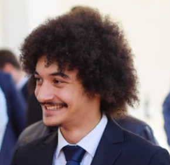

Waleed Nassar

About Me
Contact Me
Summary:
I'm a hardworking, fast learner, communicative and dedicated person with experience in Software development, Web content management and Team coordination.
Education:
-
Highschool Degree at AL-SHAHEEN AL-AHLIYA HIGH SCHOOL
June 2015
-
Bachelor Degree in Electronics and Telecommunication Engineering
October 2015 - June 2019
Politehnica Univeristy of Timisoara
-
Master's Degree in Biomedical Engineering
October 2019 - June 2021
Politehnica University of Timisoara
Work Experience:
Voluntary Work
2015
Loyac
Tasks
- Elderyly care
- Children care
Voluntary work
March 2016 - Prezent
HR Departement at LSFETc
Tasks
- Helped in the recruting of new volunteers process
- Helped integrate the new recrutes
- Helped with the motivation of the members of the organization
- Helped Evaluate every member of the organization
HR Departement Coordinator
December 2017 - May 2018
LSFETc
Tasks
- Organized the Recrutement Process
- Kept the members motivated
- Unified the whole orginzation
- Gave tasks to the members of the Departemen.
- Monitored the members of the organization
- Evaluated the members and changed their status to be consistent with their activities
Software Developer
May 2019 - April 2021
Continental Automotives S.R.L.
Tasks
- Responsible for 4 libraries in the VW project
- Writing Unit tests for all the project
- Software testing
- Documentation update/creation using Doors
- Maintenance of the 4 libraries
Web Content Manager
December 2021 - Prezent
Plan.Net Technest
Tasks
- Taking care of local content changes for BMW and MINI Websites
- Dispatcher for MINI Germany Websites
- Part of Gryphon Development team
- Dispatcher for the blueprints team
- Dispatcher for the DS2DSX project
- Main source of information about blueprints and DSX
Skills:
- Communication
- Team Coordination
- Team player
- Microsoft Office Skills
- High score in Client satisfaction
- Information Documentation
- Information Sharing among the team
- Proactive
- Jira and Confluence experience
- Github basic Knowledge
- CMS knowledge: AEM, Wordpress
- Programming languages: HTML, CSS, C, C Embedded
- Visual Studio knowledge
Languages:
- Arabic (Native)
- English (B2)
- Romanian (C1)